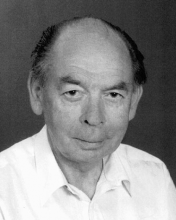

Please note: the AAS Obituaries are temporarily being hosted on this website while their full content is being ingested into the PubPub publishing platform newly adopted by the Bulletin of the American Astronomical Society. When the migration is complete, your existing links will take you to the final, migrated content. Contact peter.williams@aas.org with any questions.
Per E. Maltby (1933-2006)
Professor Per Maltby, prominent Norwegian Solar Physicist at the Institute of Theoretical Astrophysics, University of Oslo, Norway, died on 24 May 2006. Lung cancer was diagnosed in February, but he was expected to improve. Until the end of March he came to his office every day, got recent papers off the web, and followed his field closely as he had always done.
Per Maltby was born in Oslo, Norway, on 3 November 1933. He started his studies at the University of Oslo in 1952 and took his candidate degree in 1957. Between 1955 and 1958 he was a research assistant at the Institute of Theoretical Astrophysics in Oslo. In 1960 Maltby became an assistant professor (amanuensis) at the University of Bergen and from January 1963 he held a corresponding position at the University of Oslo. He became an associate professor in 1967, and from 1983 until he retired in 2003 he was a full Professor at the Institute of Theoretical Astrophysics, University of Oslo.
Per Maltby is survived by his wife Elisabet (née Ruud), whom he married in 1956. They had two children. The daughter, Bente, is a medical doctor and gynecologist serving as a section head at the district hospital in Kristiansand in southern Norway. Their son, Lars, holds a doctoral degree in engineering, specializing in the properties of powders. He is currently managing director in the Norwegian division of the French multinational company Saint Gobain. As a father Per Maltby expressed pride in his children and was pleased with their progress in life. He also enjoyed his five grandchildren.
As a scientist, Per Maltby was versatile and productive. In the early 1960s he visited the California Institute of Technology where he did pioneering studies of the distribution and time variation of the radio emission from active galaxies, using the Owens Valley Radio Observatory. His work with Alan Moffet contributed to revealing the secrets of these remote objects. Their results drew attention and were indeed mentioned in the pages of Time magazine.
However, Maltby's lifelong interest was in our Sun, and most of his more than 200 published articles and presentations are within the field of solar physics. Throughout his career, and into his years as an emeritus professor, he obtained significant results, results to which colleagues all over the world will continue to refer.
In 1964 Maltby took his doctoral degree (Doctor Philosopiae) on a study of the Evershed effect. He elegantly demonstrated that the flow was predominantly radial with only minor vertical and azimuthal components and that flow speeds increased all the way to the edge of the penumbra where the flow seemed to abruptly disappear. This disagreed with conventional knowledge at the time. His results are, however, confirmed in all later investigations.
Per Maltby highly valued his work with colleague Gunnar Eriksen. They studied the effect of progressive sonic and Alfvén waves on the profiles of spectral lines. The results demonstrated the characteristic spectral signatures of such waves and laid the foundation for a proper use of line profiles as a diagnostic tool for waves in solar and stellar atmospheres.
Sunspots continued to be a main interest. For twenty years Per Maltby and his students measured the relative intensity of sunspots at a number of wavelengths from blue and into the infrared. The infrared measurements represented entirely new knowledge, giving access to the deepest layers in the sunspot photospheres. This refined series of spectral sunspot measurements stretched over two eleven-year activity cycles and resulted in his models of the umbra and penumbra of spots, models that have served as standard reference models until this day.
Already before the start of the SOHO era in solar physics, Per Maltby had shifted his attention to the conditions in the transition region and coronal layers above sunspots. Together with his collaborators he studied rapid down flows, often at supersonic speeds, from the corona into sunspot umbrae. He rediscovered sunspot plumes, the dense, cold pillars of gas rising above sunspot umbrae and penumbrae into the corona, and mapped their properties.
In his last works Maltby unambiguously showed that the transition region over sunspot umbrae were filled with upward propagating sound waves that penetrate into the corona under certain conditions. This result deserves special attention since many have believed that such penetrations must take place, but nobody was earlier able to demonstrate it observationally in a convincing manner.
Per Maltby was always looking forward and always aware of new possibilities. He was an influential member on the Norwegian government committee that recommended Norwegian membership in the European Space Agency (ESA), and was the force behind securing sufficient domestic government funds to allow Norwegian scientists to participate in SOHO and Cluster. He took part in SOHO from the earliest planning stages and later played a prominent role in the Norwegian SOHO project. Through his activities, Norwegian space research came to life, introducing new and rich possibilities for research in astronomy and geophysics in Norway.
Maltby played important roles in many national and international advisory groups and committees. For a number of years he was a member of several of ESA's advisory groups. He served as leader of the Institute of Theoretical Astrophysics in Oslo in 1976-1977, and in 1976-1981 he was a member, and later the chairman, of the project selection committee for natural sciences for the Norwegian Foundation of Science and the Humanities. Finally, Maltby was instrumental in securing a Norwegian role in the Japanese solar space observatory Hinode, which will be a rich source for Norwegian solar physics in the years to come.
Per Maltby had a remarkably wide scientific orientation. His papers most frequently describe observations and their interpretation. He had an enormous respect for what is "real," the solid and measurable. But he combined this with deep theoretical insights that he demonstrated in his interpretations and theoretical papers.
Per taught his students a rational, scientific way of thinking and encouraged their curiosity. He was open and always dedicated to develop the best scientific cooperation. And he was generous, which was always important to his young collaborators. He might appear quiet and reserved, but showed his warm heart and appreciation when you got close to him. His death is a sad loss for his colleagues and for our discipline.
Obituary written by: Olav Kjeldseth-Moe (Institute of Theoretical Astrophysics, Norway)
BAAS Citation: BAAS, 2007, 39, 1072
SAO/NASA ADS Bibcode: 2007BAAS...39.1072K